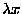
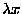

As we noted above, the term construction using brackets represents
 -abstraction. There is nothing in Watson's notation
corresponding to the 
component of the notation
-abstraction. There is nothing in Watson's notation
corresponding to the 
component of the notation
 ;
the variable bound in a bracket is determined by the syntax of
its context using a scheme due to deBruijn (but differing from the
most familiar name-free binding scheme due to deBruijn).
;
the variable bound in a bracket is determined by the syntax of
its context using a scheme due to deBruijn (but differing from the
most familiar name-free binding scheme due to deBruijn).
The variable bound in an outermost set of brackets is always ?1;
the variable bound in a set of brackets which is in the scope of one
set of brackets is ?2; in general, the variable bound in a set
of brackets which is enclosed in n-1 further brackets is ?n. For example, the constant function
 is written
[?1], but its constant function
is written
[?1], but its constant function
 is
written [[?2]] (because the bound variable in this term is bound
by the inner of the two sets of brackets).
is
written [[?2]] (because the bound variable in this term is bound
by the inner of the two sets of brackets).
This scheme (which we have seen referred to as ``de Bruijn levels'') has two advantages. The first advantage is that it is not necessary to manage binding with arbitrary variables, which leads to a complex implementation and a very complex definition of substitution. The advantage that this scheme has over the more popular of de Bruijn's schemes (de Bruijn indices) is that the variable bound in a given bracket is represented in the same way wherever it appears. The disadvantage of de Bruijn levels (which de Bruijn indices do not have) is that the bound variables in a term may need to be renumbered when it is substituted into a different term. So far, users of Watson (and Mark2) have found the de Bruijn level scheme to be usable in practice; what pressure the designer has felt from users to convert to the usual variable-binding scheme has been relieved by the availability of a tactic provided in the libraries which readily converts bracket terms to a form more like the usual form when nesting of brackets is sufficient to cause confusion.
The use of de Bruijn levels creates a complication of the definition of substitution in a much more pervasive way than the similar problem that arises with the numbering of hypothesis tactics. On the other hand, the complication is simpler than the one that would be occasioned by use of the usual variable binding schemes. For users the system adopted is certainly better than de Bruijn indices, but admittedly less readable than the usual schemes of variable binding when there is enough nesting of abstraction terms (but, as noted above, there is a tactic which converts such terms to a more readable form).
When we consider an occurrence of a subterm in a larger term, we define its level as the number of bracket terms of which it is a proper subterm, and its hlevel (for ``hypothesis level'') as the number of branches of case expressions of which it is a (not necessarily proper) subterm.
The semantics of bound variables requires that each bound variable ?n appear only in contexts contained in at least n bracket terms (the ``bound variable'' ?0 can appear in any context; it is used for special purposes by internal functions of the prover not discussed in this paper). This is enforced by the declaration checking functions of the prover. An analogous requirement could be imposed on hypothesis tactics, but is not in practice: no harm can be done by meaningless hypothesis tactics, and we are interested in allowing natural numbers to be passed as parameters to the |-| operator in tactics, which would be forbidden if declaration checking of hypothesis tactics were to be enforced.
We define what it means (and under what circumstances it is possible)
to substitute a term T found at level l1 and hlevel h1 (in
some larger term) into a context found at level l2 and hlevel h2in a term U. One circumstance under which such a substitution is
impossible is that in which a variable free in the term T becomes
bound in its new context when T is substituted into U. A bound
variable ?n is free in T iff
 ;
it becomes bound
(or meaningless) in its new context in U if n > l2; thus,
substitution is impossible if any bound variable ?n appears in
T with
;
it becomes bound
(or meaningless) in its new context in U if n > l2; thus,
substitution is impossible if any bound variable ?n appears in
T with
 .
A similar restriction is imposed on
indices of hypothesis tactics in relation to hlevel. Each variable
bound in T (i.e., ?n with n > l1) is enclosed by nbrackets in the term of which T is a subterm, while it is enclosed
in n-l1+l2 brackets in the term U; thus its index must be
changed from n to n-l1+l2 (while the indices of locally free
bound variables remain the same). Precisely analogously, hypothesis
tactic indices >h1 are translated by h2-h1.
.
A similar restriction is imposed on
indices of hypothesis tactics in relation to hlevel. Each variable
bound in T (i.e., ?n with n > l1) is enclosed by nbrackets in the term of which T is a subterm, while it is enclosed
in n-l1+l2 brackets in the term U; thus its index must be
changed from n to n-l1+l2 (while the indices of locally free
bound variables remain the same). Precisely analogously, hypothesis
tactic indices >h1 are translated by h2-h1.
The definition of substitution used by Watson is somewhat further complicated by the issue of ``higher-order matching'' discussed below.